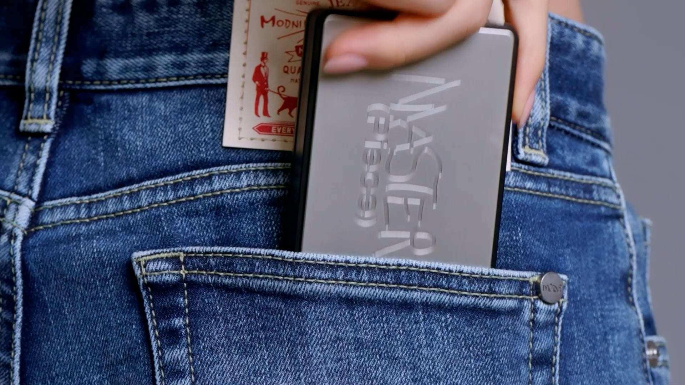

About (Tooq)
특별한 순간도 일상도 누구나, ‘툭’ 무심한 듯 편안하게.
우리는 누구나 쉽게 즐길 수 있는 꾸밈없는 감성의 아름다움을 선사합니다.
우리는 누구나 쉽게 즐길 수 있는 꾸밈없는 감성의 아름다움을 선사합니다.
At Tooq, we pursue: Effortless glow, Basic skills, Casual beauty.
We create casual aesthetic products that everyone can easily access.
We create casual aesthetic products that everyone can easily access.
무심한 듯 멋이 있게, 투크
투크는 누구든지 편안하고 손쉽게 '잘 사용할 수 있는' 제품을 생산하는 라이프 스타일 뷰티 브랜드입니다.
우리는 일상 속에 자연스레 스며들어 익숙한 시간 사용받는 브랜드가 되고 싶습니다.
무심한 듯 멋이 있게, 헤든–투–토 만족시킬 투크의 상품들로 여러분의 일상을 채워보세요.
투크는 누구든지 편안하고 손쉽게 '잘 사용할 수 있는' 제품을 생산하는 라이프 스타일 뷰티 브랜드입니다.
우리는 일상 속에 자연스레 스며들어 익숙한 시간 사용받는 브랜드가 되고 싶습니다.
무심한 듯 멋이 있게, 헤든–투–토 만족시킬 투크의 상품들로 여러분의 일상을 채워보세요.